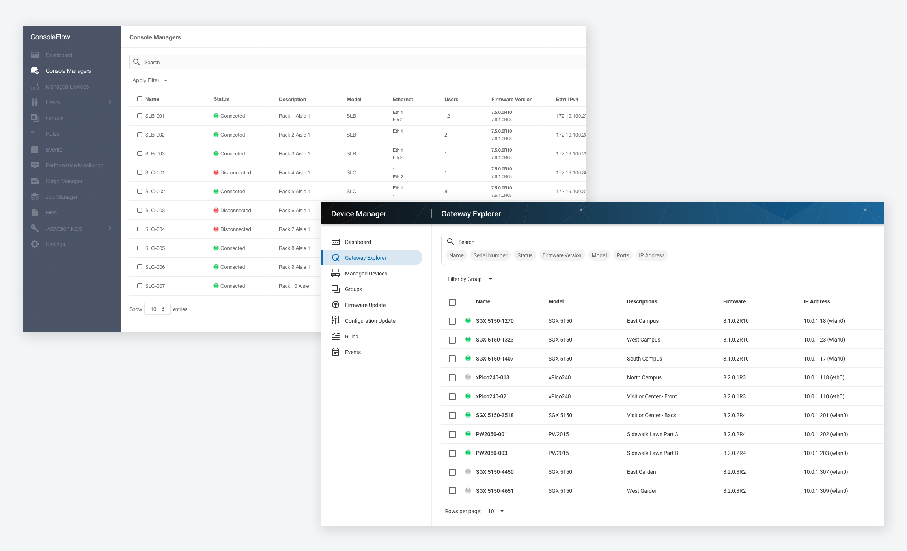
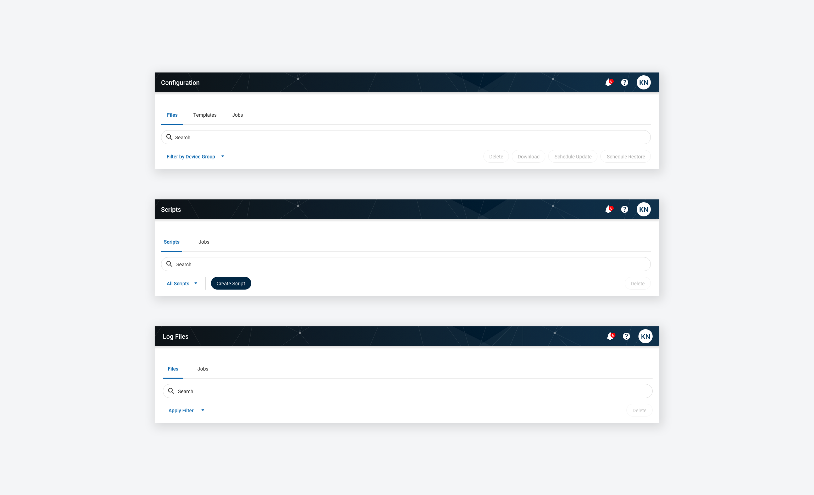

Lantronix ConsoleFlow
Role
UX Designer
Timeline
September 2019 to present
Context
Internship
Tools
Adobe XD and Illustrator
Project Brief
ConsoleFlow is cloud and on-premise hosted management software that securely connects you to your console managers and attached IT equipment. This software aggregates data into a centralized directory for accessing all connected devices in a data center, development lab or a remote branch office. This project consisted of the merge of two software products, which required a user interface facelift and design decisions for the merged features and functionalities.
My Role
My role was a UX Designer. I filled the spot of the previous full-time UX Designer and completed designing the remaining mockups. I collaborated closely with the product line manager and engineers to make sure that the designs followed the product vision and that development was consistent with the design.
The Problem
"How do we merge two existing applications into one?"
The previous application, MACH10, was to be merged into ConsoleFlow. However, operations like firmware updates and configuration updates were in their own separate tab in MACH10. In the original ConsoleFlow, all operations were done on the Explore page, where users view a list of all devices first.
The Solution
Divide user operations into their respective sections.I decided to follow MACH10’s way of organizing user operations into their own tab because users perform task-based operations. If they want to send a CLI command to a device, they go to the respective tab and select the device(s) they wish to perform the operation on. I also chose to structure the application this way because of future pricing model requirements that would show/hide add-on operations.
Consistency was so important to me during this design. There were many inconsistent flows throughout the operations. For example, firmware updates for MACH10 could only be performed on device groups, which were queried by a search string. Firmware updates for the previous ConsoleFlow required individual device selection. There needed to be a consistent way of selecting devices for all operations, so I spent a lot of time making sure flows made sense.
 Extend design for upcoming features.As the product continues to develop, new features will be added. I had to think about the question, “How would a newly added feature affect the existing design?” There were a lot of things I had to keep in the back of my mind so that newly added features wouldn’t conflict with my design.
Challenges
Prioritization of aspects of the designAlthough I wanted to produce a thorough design for each operation, project deadlines were coming quickly and engineers had to prioritize aspects of the design. There were technical limitations that the engineers had to address before changing the front-end, so design decisions were pushed back until the later releases.
Modularizing content while still keeping user needs in mindOne of the engineers pointed out that separating operations into their own tabs makes simple processes annoyingly difficult. I thought of the use cases where a user wanted to perform an action on multiple devices or device groups, but not the simple cases of performing an action on a single device. I decided to put simple operations within the device view because there were existing tabs for each operation.
Two different customer basesAlthough MACH10 users would be familiar with the new ConsoleFlow operations, existing ConsoleFlow users would have to get used to the new user interface. I had to communicate regularly with the project manager and engineers to ensure that the new design would not prevent users from performing tasks with the user interface facelift.
Final Product
Lessons Learned
CommunicationCommunication between product line managers, backend engineers, and front-end engineers is extremely important. I had to make sure that the back-end engineers were able to carry out my design, but also ensure that the front-end engineers were following my design carefully. If there were some inconsistencies, I would file issues to make sure changes were made.
Mockups allow visualization of requirementsDeliverables are needed during the requirements elicitation process so engineers can understand how to develop for the application. Requirements can be hard to visualize when there is no design. The engineers preferred having mockups to see how requirements would look on the user interface. I had to make sure I was on top of my deliverables so that development wouldn’t be pushed behind.